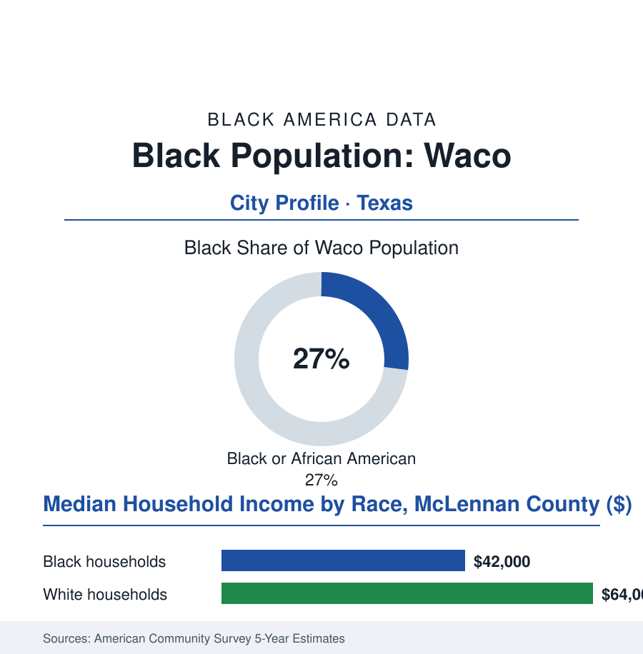

Black Cities
Black Waco: 38,000 People Between the University and the Silos
Waco's Black community — more than a quarter of the city — founded one of the oldest HBCUs in the West, carries a 1916 wound the city spent a century learning to name, and now shares a boomtown with a television empire. The numbers.

Waco's Black community numbers roughly 38,000 people — about 27% of the city's 140,000 residents — in the Central Texas river city known to the world for a university, a television renovation empire, and two national traumas. The community's own ledger is older than all three: a college it founded when Texas was frontier, churches on the east side of the Brazos, and a long work of memory. This article reads Waco's numbers.
The College on the Frontier
The founding fact is an educational one the HBCU file keeps in its first chapter: in 1872 — seven years after emancipation, in a raw cotton town on the Brazos — the African Methodist Episcopal Church founded Paul Quinn College in Waco, among the first Black colleges west of the Mississippi, the freedpeople's own institution built when the nearest alternative was another state. The college's century in Waco (it moved to Dallas in 1990) anchored the community's east side: the teachers and preachers it trained staffing the region's Black schools and churches, its campus the civic center of a community the cotton economy employed and the city's Jim Crow map confined across the river — the bridge between East Waco and downtown standing, in the community's geography, as the era's daily checkpoint, the streetcar and then the bus crossing a line everyone understood. The era's darkest entry sits in the record the city has spent the last generation formally facing: the 1916 public torture and killing of Jesse Washington, a Black teenager, before a crowd of thousands on the city hall square — an atrocity photographed, postcarded, and then buried in official silence for eighty years, until the community's historians and a broad civic coalition forced the reckoning: the marker, the apologies, the centennial observances of the recent record, the site's place in the national lynching memorial's county-by-county accounting. The mid-century chapters ran the era's standard course with Texas inflections (the school fights, the separate-and-unequal plant, the freeway era's cuts through the east side), and the community's institutions — the churches, the college's alumni web, the Black press and the funeral homes — carried the continuity as they did in every city of this atlas, at Texas scale and under a Texas sun.
The Boomtown's Two Economies
The modern data describe a city whose national brand exploded — the renovation-television phenomenon converting the silos downtown into a pilgrimage economy of millions of visitors — inside a county whose Black households sit, in the survey cuts, in the low forty-thousands of median income against the low sixty-thousands beside them: the boom's service wages at the community's kitchen tables, the boom's property appreciation at its landlords'. The education rows hold the file's structural tension in its purest university-town form: Baylor — the world's largest Baptist university, twenty thousand students, an endowment in the billions — across the river from the east-side schools whose funding the state formula sets, the town-gown gradient visible from any bridge; against it, the counterweights the data also record (the university's own community programs and its slowly diversifying enrollment, the community college's workforce rows, the health system's hospitals among the county's largest employers with the workforce file's Black rows throughout). The growth data give the file its forward motion: the region's logistics and manufacturing arrivals, the housing market's heat pushing the community's historic east side into the gentrification file's Texas chapter (the appreciation arriving, for once, to blocks where Black ownership survived), the city's majority-minority future visible in the school enrollment rows a decade early. Waco's Black 27% is, in the state file, neither the largest share nor the largest count in this atlas — it is something rarer: a community whose signature institution left, whose deepest wound is now on a marker it forced into being, and whose share of its city's sudden fame remains, like everything else in its history, a negotiation conducted from ground it has held since 1872.
Reading Waco's Numbers
Thirty-eight thousand people, twenty-seven percent, one river with two banks: Waco is the cities file's memory chapter — the proof that a community can make a city say the unsaid thing, a century later, in bronze. The census counts the residents. The marker on the square — and the college those residents' grandparents built — publish what the counting is for.
More in Black Cities
Black Atlanta: Population, Distribution, and Growth of a Black Metropolis
Metro Atlanta holds more than two million Black residents — roughly one in three, second only to New York. The suburban distribution, migration history, and composition of Black Atlanta in the census data.
Black New York: The Largest Black Population in America
The New York metropolitan area holds about 3.4 million Black residents — more than any metro in the nation — and the city itself about two million. The census profile.
Black Washington: The District and the Metro
The Washington metro holds about 1.6 million Black residents, and the District itself — long a majority-Black city — now records a Black share near 41 percent. The census profile.
Source: U.S. Census Bureau, 2020 Census and American Community Survey 5-year estimates; City of Waco and McLennan County records; Baylor University data.